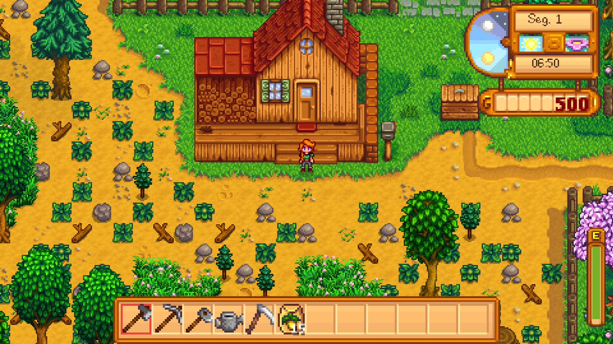
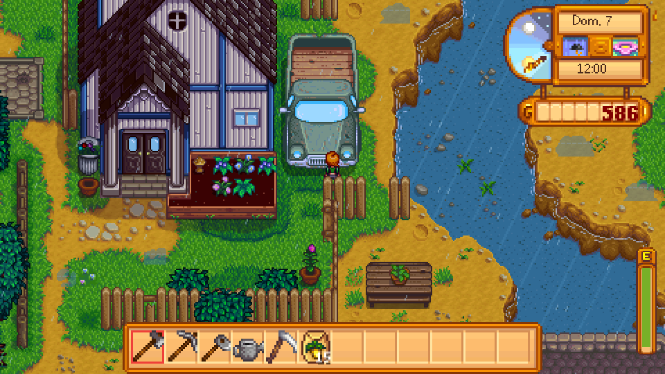
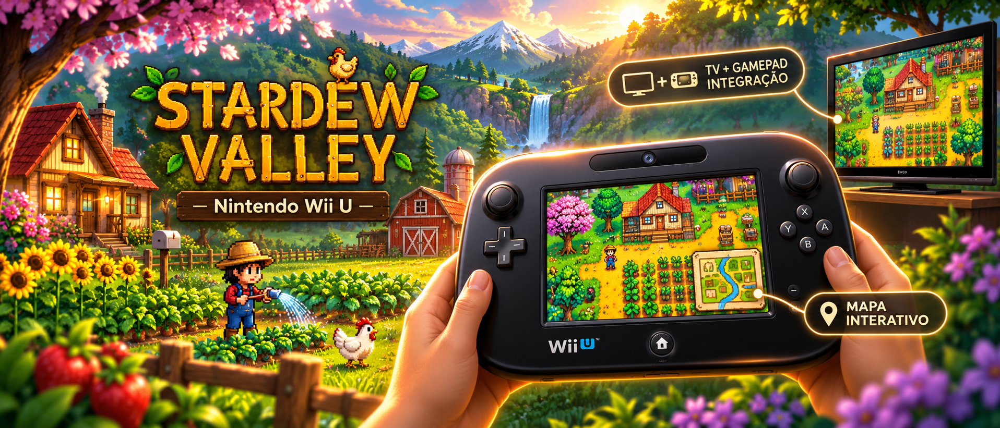

01 / FRONTEND
Boot, slots e gerações
Do título aos três slots com retrato, nome, fazenda, data e ouro lidos do manifesto. Gerações em `gen-XXXX` ficam recuperáveis e os blocos r6 a r9 preservam saves escritos por revisões anteriores.
Protótipo nativo de Stardew Valley para Wii U / Cemu: TV Full HD, GamePad independente, 48 mapas e 34 NPCs, os sete tipos de fazenda, a mina em setores e o combate inicial da R9. Nada disso foi validado no Wii U físico, e FPS e RAM seguem sem medição desde a V0.11 R2.



Da V0.12 à V0.14 R9 o laboratório ganhou uma frente de boot com slots e saves por geração, criador de personagem, introdução e eventos, áudio noturno sazonal, os sete tipos de fazenda com o chão reproduzido byte a byte, a ferraria, a mina em quatro setores e o combate inicial.
Do título aos três slots com retrato, nome, fazenda, data e ouro lidos do manifesto. Gerações em `gen-XXXX` ficam recuperáveis e os blocos r6 a r9 preservam saves escritos por revisões anteriores.
O chão da fazenda padrão sai byte a byte (5.324.800 bytes, 0 divergências) só do atlas e das grades; a frente coincide em 96,779% e a profundidade em 88,691%, diferença registrada. A ordem de bytes dos índices foi corrigida no PowerPC.
Melhorias de ferramenta na ferraria, quatro setores com escadas e elevador e, na R9, a espada de Marlon com 2 a 5 de dano, duas gosmas por setor, dano de contato e resgate com 25 de vida.
Quadro histórico da V0.11 R2: Linux/Vulkan, Mesa llvmpipe, host compartilhado, TV 1920×1080, médias em janelas de 60 quadros (sem a primeira janela de aquecimento). Desde essa versão o FPS e a RAM não foram medidos de novo — o progresso registra as duas grandezas como nao-medido. A meta do projeto segue sendo mínimo de 40 FPS e alvo de 60 FPS, como critério de validação, não garantia no Wii U físico.
| Cenário | FPS médio | Menor janela | Pior quadro | > 25 ms |
|---|---|---|---|---|
| Fazenda em movimento | 49.7 | 45.2 | 127.879 ms | 52/360 |
| Fazenda com chuva | 54.2 | 46.9 | 31.567 ms | 28/360 |
| Fazenda à noite | 54.4 | 50.4 | 38.533 ms | 28/360 |
| Cidade / carro Lewis | 60.0 | 59.1 | 29.408 ms | 1/360 |
| Cidade / rio | 60.2 | 59.9 | 23.816 ms | 0/360 |
| Interior Pierre | 60.0 | 59.4 | 29.526 ms | 3/360 |
O build da R9 declara 49 suítes C++ de host e 24 verificações entre testes Python e verificadores de ferramentas, fechando com SCRIPT_EXIT=0 e BUILD_EXIT=0, além de 948 objetos de assets comparados byte a byte. RPX principal e variante _compat compilados. FPS e RAM continuam sem medição desde a V0.11 R2.
| Área | Evidência e limite |
|---|---|
| Mundo | 48 mapas, 34 NPCs, agendas, inventário, remessa, calendário, amizade, coleta, peixes e render portátil aprovados nos testes. |
| Sistemas | 51 cultivos, 15 construções da Robin, 58 cartas originais, lojas sazonais, áudio noturno sazonal e sidecar da fazenda em v4; saves por slot e geração em `stardew_wiiu_v013_slotN/gen-XXXX/main.sav`. |
| V0.14 | As sete fazendas com chão byte a byte, a ordem de índices little-endian no PowerPC, a ferraria com melhorias, a mina em quatro setores com elevador e o combate inicial da R9 passaram nas suítes de host; o que foi visto no Cemu está descrito nas evidências da revisão. |
| Compilação | `stardew_explorer_v014r9.rpx` (GX2 Full HD) e `stardew_explorer_v014r9_compat.rpx` (OSScreen) na pasta `Stardew_WiiU_v014r9`, junto com fonte e evidências, conforme a entrega padrão. |
| Console físico | Registrado como nao-testado no build-info da R9: nenhum cenário desta revisão tem console físico. No escopo V1.0, 5 de 56 requisitos têm aceite demonstrado no host (8,9%) e 52 de 56 têm implementação identificada — é aceite técnico no computador, não validação de hardware. |
A fazenda da praia não existe no dump local e o tipo 6 segue sem resolução. As 120 plantas individuais da mina, os cofres por planta e a animação completa do mapa estão pendentes, assim como cercas, nomes das galinhas, interior do galinheiro, rotinas diárias, casamento, festivais integrais, produção animal completa e cooperativo. O texto dentro do jogo existe apenas em português.
Cada versão é entregue na pasta Stardew_WiiU_v014r9 com executável, fonte e evidências; um ZIP só é feito sob pedido explícito. A meta de 40–60 FPS é critério de validação, e não existe medição desde a V0.11 R2.
Abra `executavel/v014r9/stardew_explorer_v014r9.rpx` no Cemu; a variante `_compat` oferece o backend de compatibilidade. Saves por slot e geração em `stardew_wiiu_v013_slotN/gen-XXXX/main.sav`, e a R9 lê saves de revisões anteriores.
A demo no navegador ainda é a v0.1 do laboratório. A V0.14 R9 roda como RPX no Cemu.